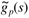
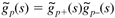
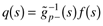
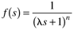
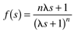
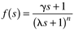

8.12 Summary
The IMC design procedure is exactly the same as the open-loop control design procedure. Unlike open-loop control, the IMC structure compensates for disturbances and model uncertainty. The IMC tuning (filter) factor, l, is used to detune for model uncertainty. It should be noted that the standard IMC design procedure is focused on setpoint responses, but good setpoint responses do not guarantee good disturbance rejection, particularly for disturbances that occur at process inputs. A modification of the IMC design procedure was developed to improve input disturbance rejection. Tolerance of model uncertainty is called robustness and was discussed in more detail in Chapter 7.
Like open-loop control, the disadvantage compared with standard feedback control is that IMC does not handle integrating or open-loop unstable systems. In Chapter 9, we develop a procedure, based on IMC, to form a standard feedback control system that can handle open-loop unstable systems. We call this IMC-based PID.
Terms
All-pass:
Property of a transfer function (detailed in Chapter 7). Factorization:
Factoring a transfer function into invertible (good stuff) and noninvertible (bad stuff) portions. Minimum phase:
No RHP zeros or time delays. Nonminimum phase:
Contains RHP zeros and/or time delays. Physical realizability:
A controller can be physically implemented if it is proper. Proper:
A transfer function is proper if the order of the denominator is at least as great as the order of the numerator. If they are exactly the same order, the transfer function is semiproper. If the order of the denominator is greater than the numerator, the transfer function is strictly proper.
Summary of Internal Model Control System Design Procedure
Develop a process model.

Factor the process model into invertible (good) and noninvertible (bad) portions,

usually using an all-pass factorization. Invert the invertible portion of the process model (the good stuff) and cascade with a filter that makes the controller q(s) proper.

For a focus on step setpoint changes, the following form is often used:

Although not discussed in detail in the chapter, for good tracking of ramp setpoint changes, the following form for the filter should be used:

For good rejection of step input load disturbances, the form used is

where g is selected to cancel the slow process time constant. Implement in the form of Figure 8-20 to handle constraints on the manipulated input.
|